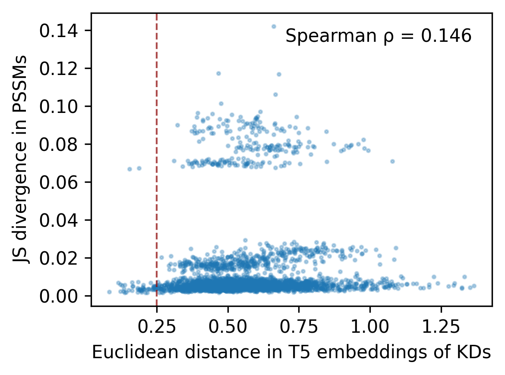

import pandas as pd, numpy as np
import matplotlib.pyplot as plt
from numpy.linalg import norm
from katlas.data import *
from scipy.stats import spearmanr
from katlas.clustering import *KD similarity & PSSM similarity
# pspa_t5 = pd.read_parquet('train/pspa_t5.parquet')
cddm_t5 = pd.read_parquet('train/cddm_t5.parquet')df = cddm_t5.copy()df['0pY'].sort_values()O75385_ULK1_HUMAN_KD1 0.000000
O15530_PDPK1_HUMAN_KD1 0.000000
P78527_PRKDC_HUMAN_KD1 0.000000
Q8IU85_KCC1D_HUMAN_KD1 0.000000
Q13535_ATR_HUMAN_KD1 0.000000
...
Q15303_ERBB4_HUMAN_KD1 0.933654
P22455_FGFR4_HUMAN_KD1 0.936460
P54764_EPHA4_HUMAN_KD1 0.936728
P10721_KIT_HUMAN_KD1 0.939353
Q15375_EPHA7_HUMAN_KD1 0.939747
Name: 0pY, Length: 320, dtype: float64st = df[df['0pY']<0.7].copy()
tyr = df[df['0pY']>=0.7].copy()def euclidean_dist(u, v):
return norm(u - v)def get_dist(df):
df =df.copy()
t5_cols = df.columns[df.columns.str.startswith('T5')]
pssm_cols = df.columns[~df.columns.str.startswith('T5')]
D_pssm = get_1d_js_parallel(df[pssm_cols])
D_t5 = get_1d_distance_parallel(df[t5_cols],func_flat=euclidean_dist)
return D_t5,D_pssmD_t5,D_pssm= get_dist(st)100%|████████████████████████████████████████████████████████████████████████████████████████████| 241/241 [00:42<00:00, 5.62it/s]
100%|████████████████████████████████████████████████████████████████████████████████████████████| 241/241 [00:03<00:00, 70.38it/s]D_t5_y,D_pssm_y= get_dist(tyr)100%|██████████████████████████████████████████████████████████████████████████████████████████████| 79/79 [00:04<00:00, 16.69it/s]
100%|█████████████████████████████████████████████████████████████████████████████████████████████| 79/79 [00:00<00:00, 185.65it/s]def plot_scatter(x, y,line=None):
plt.figure(figsize=(4,3), dpi=300)
plt.scatter(x, y, s=3, alpha=0.3)
# labels
plt.xlabel("Euclidean distance in T5 embeddings of KDs")
plt.ylabel("JS divergence in PSSMs")
# calculate Spearman correlation
rho, pval = spearmanr(x, y)
# annotate Spearman correlation coefficient on the plot
plt.text(0.95, 0.95, f"Spearman ρ = {rho:.3f}",
ha="right", va="top", transform=plt.gca().transAxes,
fontsize=10, bbox=dict(facecolor="white", alpha=0.6, edgecolor="none"))
if line is not None: plt.axvline(x=line, color="darkred", alpha=0.7,linestyle="--", linewidth=1)
plt.tight_layout()plot_scatter(D_t5,D_pssm,line=0.25)
plot_scatter(D_t5_y,D_pssm_y,line=0.25)
Distance in all kd
df = Data.get_kd_uniprot()
df = df[df.active_D1_D2==1].reset_index(drop=True)# df['in_pspa'] = df.kd_ID.isin(pspa_t5.index).astype(int)
df['in_cddm'] = df.kd_ID.isin(cddm_t5.index).astype(int)from katlas.feature import *# t5 = get_t5(df,col='kd_seq')
# t5.index=df.kd_ID
# t5 = t5.astype('float64')
# t5.to_parquet('out/uniprot_kd_t5.parquet')t5_df = pd.read_parquet('raw/t5_kd.parquet')def find_close_negatives(df: pd.DataFrame,
label_series,
threshold: float = 0.25,
return_all: bool = False) -> pd.DataFrame:
"""
For each negative (label_col==0), find the nearest positive (label_col==1)
by Euclidean distance over `features`, and mark whether it's within `threshold`.
Returns a DataFrame indexed by the negatives' index with columns:
- closest_pos_index
- closest_dist
- within_threshold (bool)
If `return_all=False`, only rows within threshold are returned.
"""
# Extract arrays
mask_pos = label_series.eq(1).to_numpy()
mask_neg = ~mask_pos
X_pos = df.loc[mask_pos].to_numpy(dtype=float, copy=False)
X_neg = df.loc[mask_neg].to_numpy(dtype=float, copy=False)
# Handle edge cases
if X_pos.size == 0 or X_neg.size == 0:
out = pd.DataFrame(columns=["closest_pos_index", "closest_dist", "within_threshold"],
index=df.index[mask_neg])
return out if return_all else out.iloc[0:0]
# Pairwise squared distances: ||a-b||^2 = ||a||^2 + ||b||^2 - 2 a·b
sq_pos = np.einsum('ij,ij->i', X_pos, X_pos) # (P,)
sq_neg = np.einsum('ij,ij->i', X_neg, X_neg) # (N,)
D2 = sq_neg[:, None] + sq_pos[None, :] - 2.0 * (X_neg @ X_pos.T)
np.maximum(D2, 0.0, out=D2) # numerical safety
# Nearest positive for each negative
idx_min = D2.argmin(axis=1) # (N,)
dmin = np.sqrt(D2[np.arange(D2.shape[0]), idx_min]) # (N,)
# Map back to indices
pos_index = df.index[mask_pos].to_numpy()
neg_index = df.index[mask_neg].to_numpy()
closest_pos_index = pos_index[idx_min]
out = pd.DataFrame({
"closest_pos_index": closest_pos_index,
"closest_dist": dmin,
"within_threshold": dmin <= threshold,
}, index=neg_index)
return out if return_all else out[out["within_threshold"]]results_cddm = find_close_negatives(t5_df, label_series=df.in_cddm,
threshold=0.25, return_all=True)results_cddm.to_parquet('raw/kd_similar_cddm.parquet')results_cddm[results_cddm.within_threshold].sort_values('closest_dist')| closest_pos_index | closest_dist | within_threshold | |
|---|---|---|---|
| A4K2T0_STK4_MACMU_KD1 | Q13043_STK4_HUMAN_KD1 | 0.000000 | True |
| Q9WV60_GSK3B_MOUSE_KD1 | P49841_GSK3B_HUMAN_KD1 | 0.000000 | True |
| A4K2Y1_STK4_CHLAE_KD1 | Q13043_STK4_HUMAN_KD1 | 0.000000 | True |
| E2QWQ2_NLK_CANLF_KD1 | Q9UBE8_NLK_HUMAN_KD1 | 0.000000 | True |
| Q8CIP4_MARK4_MOUSE_KD1 | Q96L34_MARK4_HUMAN_KD1 | 0.000000 | True |
| ... | ... | ... | ... |
| O08605_MKNK1_MOUSE_KD1 | Q9HBH9_MKNK2_HUMAN_KD1 | 0.248701 | True |
| P87253_KPC1_NEUCR_KD1 | Q04759_KPCT_HUMAN_KD1 | 0.249016 | True |
| P47817_WEE2A_XENLA_KD1 | P30291_WEE1_HUMAN_KD1 | 0.249110 | True |
| Q9W739_CDK1_RANDY_KD1 | P06493_CDK1_HUMAN_KD1 | 0.249479 | True |
| Q8AYG3_TTK_DANRE_KD1 | P33981_TTK_HUMAN_KD1 | 0.249601 | True |
1195 rows × 3 columns